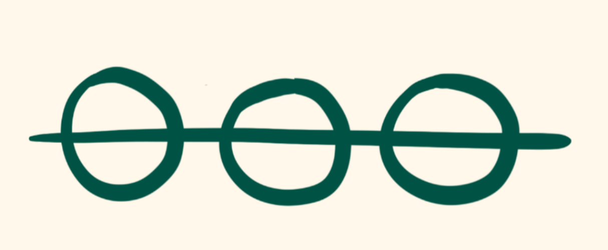

Especially in the midst of this quarantine crisis, we’re all fighting the feeling that we’re living in a tunnel. That feeling that the world we inhabit is constricted to a narrow path, where the days melt irretrievably together, and despite the passage of weeks and months, somehow, everything looks the same as the starting point.
odyssee is about escaping that tunnel. We took a threefold approach to making that happen.

I. Awareness of the present moment
Our days can blend together because it’s too easy to slip into cruise control, unaware of the details that fleet by us. By asking us to periodically record our moods, activities, and attitudes, the challenge prompts us to take note of these details, expanding each moment into an experience in its own right.
II. Reflection on our experiences
Recording our experiences throughout the day allows us to look back and learn. So even if tomorrow we’re in the same place, we’re nonetheless a different person.

III. Vulnerability with others
By showing through visualizations how our experiences all fit together in a bigger ecosystem, we can begin to expand beyond the narrow tunnel we inhabit. We hope the interchange allows people to learn vicariously through each other and fosters a sense of solidarity that can fight against the seclusion that hangs over all of our heads.